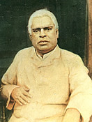

|

|
BHAKTIVINODA THAKURA reestablished, in the closing days of the nineteenth century, the teachings of Lord Caitanya, which by then had been largely misrepresented or lost. Srila Bhaktivinoda Thakura wrote almost one hundred books to explain the science of Krsna consciousness, expose pseudo incarnations of God, and defeat misconceptions about the path of devotional service. Srila Bhaktivinoda Thakura was both an active preacher and the Deputy Magistrate for Jagannatha Puri, Orissa, as well as the father of ten children. One of his sons was Srila Bhaktisiddhanta Sarasvati Thakura. Biographers say that Srila Bhaktivinoda Thakura accomplished all his many duties perfectly. | |
| © 2002-2004 ISKCON |